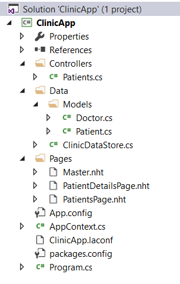
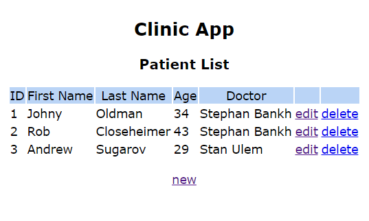

REST Server
NFX.WAVE gives an opportunity to create Web services of any complexity, in particular, RESTful services. In the previous tutorial REST API we saw how API can be implemented with NFX.Wave technology. Present tutorial complemets it with client-side frontend.
Let's get started. Below is step-by-step guide to create the simplest NFX.Wave REST service - The Clinic App web application that stores information about patients of some clinic. Operator can execute usual actions over patient records such as create, edit and delete.
1. Create new C# Console Application project ClinicApp.
2. Add reference to NFX (e.g. via NuGet).
3. Go to Program.cs and create WaveServer instance in the scope of NFX ServiceBaseApplication application container:
using System;
using NFX.ApplicationModel;
using NFX.Wave;
namespace ClinicApp
{
class Program
{
static void Main(string[] args)
{
try
{
using (var app = new ServiceBaseApplication(args, null))
using (var server = new WaveServer())
{
server.Configure(null);
server.Start();
Console.WriteLine("server started...");
Console.ReadLine();
}
}
catch (Exception error)
{
Console.WriteLine("Critical error:");
Console.WriteLine(error);
Environment.ExitCode = -1;
}
}
}
}
4. Create the following project folders: Pages, Controllers, Data, Data\Models.
5. In classic MVC approach we need data layer, pages and controllers. Let us start with application data infrastructure.
Add the following classes in Data\Models folder:
public class Doctor : TypedRow
{
[Field(required: true)]
public int ID { get; set; }
[Field(required: true, maxLength: 32, description: "First Name")]
public string FirstName { get; set; }
[Field(required: true, maxLength: 32, description: "Last Name")]
public string LastName { get; set; }
public string FullName { get { return "{0} {1}".Args(FirstName, LastName); } }
}
public class Patient : TypedRow
{
[Field(required: true)]
public int ID { get; set; }
[Field(description: "Doctor")]
public int? DoctorID { get; set; }
[Field(required: true, maxLength: 32, description: "First Name")]
public string FirstName { get; set; }
[Field(required: true, maxLength: 32, description: "Last Name")]
public string LastName { get; set; }
[Field(required: true, min: 0, description: "Age")]
public int Age { get; set; }
public override JSONDataMap GetClientFieldValueList(object callerContext, Schema.FieldDef fdef, string targetName, string isoLang)
{
if (fdef.Name.EqualsIgnoreCase("DoctorID"))
{
var doctors = AppContext.Data.GetDoctors();
var result = new JSONDataMap();
foreach (var doctor in doctors)
result.Add(doctor.ID.ToString(), doctor.FullName);
return result;
}
return null;
}
public void UpdateFrom(Patient other)
{
this.DoctorID = other.DoctorID;
this.FirstName = other.FirstName;
this.LastName = other.LastName;
this.Age = other.Age;
}
}
Note that both models are inherited from NFX.DataAccess.CRUD.TypedRow class
which makes possible to use whole set of NFX.Wave features such as client-side record model reactivity, validation and many other.
Also note GetClientFieldValueList method which makes possible to easily bind class property to corresponding value list (e.g. for UI selectors).
6. We also need some data store to persist our data. In real life application some RDBMS most likely will be used. In our toy example the data will be stored in memory for the case of simplicity.
Let us implement our data store. Add the following ClinicDataStore class to Data\ folder
public class ClinicDataStore : ApplicationComponent, IDataStoreImplementation, IConfigurable
{
private readonly Dictionary<int, Doctor> m_Doctors = new Dictionary<int, Doctor>();
private readonly Dictionary<int, Patient> m_Patients = new Dictionary<int, Patient>();
public ClinicDataStore()
{
m_Doctors.Add(1, new Doctor { ID=1, FirstName="Stephan", LastName="Bankh" });
m_Doctors.Add(2, new Doctor { ID=2, FirstName="Stan", LastName="Ulem" });
m_Patients.Add(1, new Patient { ID=1, FirstName="Johny", LastName="Oldman", Age=34, DoctorID=1 });
m_Patients.Add(2, new Patient { ID=2, FirstName="Rob", LastName="Closeheimer", Age=43, DoctorID=1 });
m_Patients.Add(3, new Patient { ID=3, FirstName="Andrew", LastName="Sugarov", Age=29, DoctorID=2 });
}
#region CRUD
#endregion
#region IDataStoreImplementation, IApplicationComponent, IConfigurable
#endregion
}
We use the concept of NFX Data Store - a single application data access point.
After proper setup of this class in configuration file, its instance will be accessible through App.DataStore static property.
Let us leave interfaces implementation default
#region IDataStoreImplementation, IApplicationComponent, IConfigurable
public string TargetName { get { return "ClinicDB"; } }
public StoreLogLevel LogLevel { get; set;}
public bool InstrumentationEnabled { get; set; }
public IEnumerable<KeyValuePair<string, Type>> ExternalParameters { get { return null; } }
public void TestConnection()
{
}
public void Configure(IConfigSectionNode node)
{
ConfigAttribute.Apply(this, node);
}
public IEnumerable<KeyValuePair<string, Type>> ExternalParametersForGroups(params string[] groups)
{
throw new NotImplementedException();
}
public bool ExternalGetParameter(string name, out object value, params string[] groups)
{
throw new NotImplementedException();
}
public bool ExternalSetParameter(string name, object value, params string[] groups)
{
throw new NotImplementedException();
}
#endregion
Let us also add CRUD logic to our data store:
#region CRUD
public void CreatePatient(Patient patient)
{
var id = m_Patients.Keys.Max() + 1;
patient.ID = id;
m_Patients.Add(id, patient);
}
public IEnumerable<Patient> GetPatients()
{
return m_Patients.Values;
}
public Patient GetPatient(int id)
{
return m_Patients[id];
}
public void UpdatePatient(Patient patient)
{
var persisted = m_Patients[patient.ID];
persisted.UpdateFrom(patient);
}
public void DeletePatient(int id)
{
m_Patients.Remove(id);
}
public Doctor GetDoctor(int id)
{
return m_Doctors[id];
}
public IEnumerable<Doctor> GetDoctors()
{
return m_Doctors.Values;
}
#endregion
7. It is suitable to have global strong-typed shortcut to our data store.
Add AppContext static class in project root
using System;
using NFX;
using NFX.Serialization.JSON;
using ClinicApp.Data;
using ClinicApp.Data.Models;
namespace ClinicApp
{
internal static class AppContext
{
public static ClinicDataStore Data
{
get { return (ClinicDataStore)App.DataStore; }
}
public static string FormJSON(Patient patient, Exception validationError = null)
{
var generator = new NFX.Wave.Client.RecordModelGenerator();
return generator.RowToRecordInitJSON(patient, validationError).ToJSON();
}
}
}
The second method FormJSON will be used below for serialization of Patient data type to JSON string.
8. Now everything is ready for writing MVC controllers and page templates. Let us start from pages.
Add Master.nht text file to Pages folder
#<laconf>
compiler
{
using { ns="NFX" }
using { ns="NFX.Wave" }
using { ns="NFX.Wave.Templatization" }
base-class-name="NFX.Wave.Templatization.WaveTemplate"
abstract="true"
namespace="ClinicApp.Pages"
}
#</laconf>
#[class]
protected abstract void renderBody();
protected virtual void renderStyles() { }
#[render]
<!DOCTYPE html>
<html>
<head>
<style>
body {
font-family: Verdana;
font-size: 14px;
}
#root {
text-align: center;
margin: 40px 0;
width: 100%;
}
#table-patients {
text-align: left;
margin: 0 auto;
}
#table-header {
background: #bad4f6;
text-align: center;
}
.center {
text-align: center;
}
.hidden {
display: none;
}
.fView label {
display: block;
margin-top: 10px;
}
.divBtns {
margin-top: 20px;
}
.detailsHeader {
margin-bottom: 30px;
}
.marginTop15 {
margin-top: 15px;
}
</style>
@[renderStyles();]
<script src="/stock/site/script/wv.js"></script>
<script src="/stock/site/script/wv.gui.js"></script>
<script src="/stock/site/script/jquery-2.1.4.min.js"></script>
</head>
<body>
<div id="root">
@[renderBody();]
</div>
</body>
</html>
The file is simple NFX HTML template (nht) format which is to be parsed by ntc utility. For details please see View Engine tutorial
Compile the template by running ntc tool explicitly or add the following line (fix path to ntc tool if it is necessary) to project pre-build events
"$(SolutionDir)packages\NFX.3.4.0.1\tools\ntc" "$(ProjectDir)Pages\*.nht" -r -ext ".auto.cs" /src
Add the resulting file Master.nht.auto.cs class to the project. It is common practice to nest generated file from Master.nht.
9. A list of all patients will be displayed on start page.
Add PatientsPage.nht file to Pages folder:
#<laconf>
compiler
{
using { ns="System" }
using { ns="System.Linq" }
using { ns="NFX" }
using { ns="ClinicApp.Data" }
using { ns="ClinicApp.Data.Models" }
base-class-name="ClinicApp.Pages.Master"
namespace="ClinicApp.Pages"
}
#</laconf>
#[class]
public PatientsPage(IEnumerable<Patient> patients)
{
m_Patients = patients;
}
private IEnumerable<Patient> m_Patients;
#[override renderBody()]
<div>
<h2>Clinic App</h2>
<h3>Patient List</h3>
<table id="table-patients">
<thead id="table-header">
<tr>
<td>ID</td>
<td>First Name</td>
<td>Last Name</td>
<td>Age</td>
<td>Doctor</td>
<td></td>
<td></td>
</tr>
</thead>
<tbody>
@[foreach (var patient in m_Patients){
var doctor = patient.DoctorID.HasValue ?
AppContext.Data.GetDoctor(patient.DoctorID.Value) :
null;]
<tr>
<td>?[patient.ID]</td>
<td>?[patient.FirstName]</td>
<td>?[patient.LastName]</td>
<td>?[patient.Age]</td>
<td>?[(doctor != null ) ? doctor.FullName : "-"]</td>
<td>
<a href="/patients/?[patient.ID]">edit</a>
</td>
<td>
<a href="javascript:deletePatient(?[patient.ID])">delete</a></td>
</tr>
@[}]
</tbody>
</table>
<div class="center marginTop15"><a href="/patients/0">new</a></div>
</div>
<script>
function deletePatient(id) {
$.ajax({
url: '/patients/'+id,
type: 'DELETE',
dataType: "json"
})
.done(function () {
window.location.reload();
})
.fail(function () {
WAVE.GUI.toast("The operation did not succeed", "error");
});
}
</script>
Don't forget to compile the template with ntc utility and add the result to the project.
10. Add page PatientDetailsPage.nht for editing Patient entity
#<laconf>
compiler
{
using { ns="System" }
using { ns="System.Linq" }
using { ns="NFX" }
using { ns="ClinicApp.Data" }
using { ns="ClinicApp.Data.Models" }
base-class-name="ClinicApp.Pages.Master"
namespace="ClinicApp.Pages"
}
#</laconf>
#[class]
public PatientDetailsPage(Patient patient)
{
m_Patient = patient;
}
private Patient m_Patient;
#[override renderBody()]
<h3 class="detailsHeader">Patient Details</h3>
<div id="form-container">
<form id="frmPatient" data-wv-rid="v1" action="/patients/?[m_Patient.ID]" method="POST" novalidate>
<div class="fView" data-wv-fname="ID" style="display: none;"></div>
<div class="fView" data-wv-fname="FirstName"></div>
<div class="fView" data-wv-fname="LastName"></div>
<div class="fView" data-wv-fname="Age"></div>
<div class="fView" data-wv-fname="DoctorID" data-wv-ctl="combo"></div>
<div class="divBtns">
<input type="submit" value="Submit" />
<input type="button" onclick="window.location='/patients';" value="Cancel" />
</div>
</form>
</div>
<script>
window.onbeforeunload = null;
var REC = new WAVE.RecordModel.Record(?[:AppContext.FormJSON(m_Patient, null)]);
var RVIEW = new WAVE.RecordModel.RecordView("v1", REC, WAVE.RecordModel.GUI);
$('#frmPatient').submit(function (e) {
REC.resetModified();
return true;
})
</script>
Again, compile the template with ntc utility and add the result file to the project.
11. Now we need to add MVC controller to our project.
Add the class Patients to Controllers folder:
using System;
using System.Linq;
using NFX;
using NFX.Wave.MVC;
using ClinicApp.Pages;
using ClinicApp.Data.Models;
namespace ClinicApp.Contollers
{
public class Patients : Controller
{
[Action]
public object Index()
{
var patients = AppContext.Data.GetPatients().OrderBy(p => p.ID);
return new PatientsPage(patients);
}
[Action("details", 0, "match{methods=GET}")]
public object Details_GET(int id)
{
var patient = (id==0) ?
new Patient() :
AppContext.Data.GetPatient(id);
return new PatientDetailsPage(patient);
}
[Action("details", 1, "match{methods=POST}")]
public object Details_POST(Patient patient)
{
if (patient.ID==0)
AppContext.Data.CreatePatient(patient);
else
AppContext.Data.UpdatePatient(patient);
if (WorkContext.RequestedJSON)
return NFX.Wave.SysConsts.JSON_RESULT_OK;
else
return new Redirect("/patients");
}
[Action("details", 1, "match{methods=DELETE accept-json=true}")]
public object Details_DELETE(int id)
{
AppContext.Data.DeletePatient(id);
return NFX.Wave.SysConsts.JSON_RESULT_OK;
}
}
}
In the previous REST API tutorial we split POST method into POST and PUT. Here we handle patient create and update in a single action method because of well-known lack of HTTP methods other than GET or POST in HTML forms.
12. We are almost done. The last step is to add config file with server settings, MVC handler path matches etc.
application
{
data-store
{
type="ClinicApp.Data.ClinicDataStore, ClinicApp"
}
wave
{
server
{
prefix { name="http://localhost:8070/" }
dispatcher
{
handler
{
order=1
name="Stock Content Embedded Site"
order=1000
type="NFX.Wave.Handlers.StockContentSiteHandler, NFX.Wave"
match{ path="/stock/{*path}"}
}
handler
{
order=10
type="NFX.Wave.Handlers.MVCHandler, NFX.Wave"
type-location
{
assembly="ClinicApp.exe"
ns { name="ClinicApp.Contollers" }
}
match
{
order=1
path="patients"
var{ name=type default='Patients' }
var{ name=mvc-action default='Index' }
}
match
{
order=10
path='patients/{id}'
var{ query-name=* }
var{ name=type default='Patients' }
var{ name=mvc-action default='Details' }
}
match
{
order=100
path="/{type=Patients}/{mvc-action=Index}"
}
}
}
}
}
}
Make sure that Build Action is set to None and Copy to Output Directory is set to Copy Always.
Final solution structure should be

13. That is it! Run the ClinicApp application, open browser and type http://localhost:8070/patients in the address bar.
